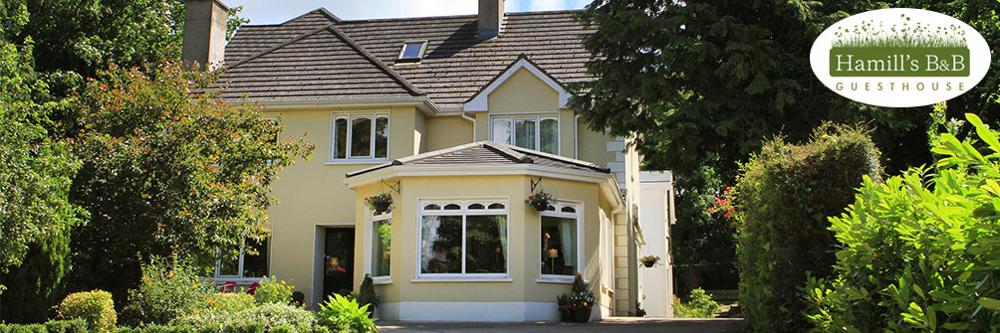

Ballinamore Cuisine at its most creative and delicious - The Commercial Hotel is known for its steaks and superb home cooking menus produced from Lovely Leitrim produce all at the good value that is expected from the Commercial.
The Commercial prides themelves on their cuisine, whether guests are looking for a simple snack or something more substantial we provide a range of options that will suit everyone's pallet.
Bar on premises so no need to worry about drinking and driving. Enjoy a lively pub to meet all the locals and join in the storytelling and fun. Featuring great disco nights, this is an ideal place to enjoy a glass of fine drink after a tiring day. Pool table and darts available in the bar.
Hamills Bed and Breakfast

Looking for a place to stay in Ballinamore? Hamill’s Bed & Breakfast offers a convenient town centre location for your B&B accommodation in Ballinamore Co Leitrim. Hidden in leafy garden surroundings, just a step from the street, with ample car parking, Hamill’s provides the perfect base for exploring and fishing in Leitrim and Cavan. – your perfect choice for accommodation in Ballinamore.